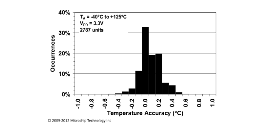
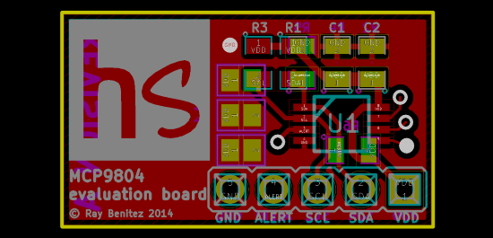

Comprehensive library for the Microchip Technology MCP9804 digital temperature sensor.
We like the MCP9804 temperature sensor: small, lots of features, I2C connected and readable data sheet. The accuracy is claimed to be within +/- 1 degree Celsius.
However, when we searched for sample code or an Arduino library for the MCP9804, we could not find anything which made use of all its features. So, we wrote one.
The Hackscribble_MCP9804 library lets you:
We have hidden all the complicated details of communications, register addressing and value conversions. Just connect the sensor, specify its I2C address and you can start reading temperatures.
#include <Hackscribble_MCP9804.h>
Hackscribble_MCP9804 sensor(0x1B);
...
sensor.begin();
Serial.print("Ambient temperature(Ta) = ");
Serial.println(sensor.getTAFloat(), 2);
To test the MCP9804, we designed and made a small evaluation board. You can download the designs from the hardware project page.
New! Release 0.2 gives you more control over the MCP9804 alert output.
Download the library, example sketches and user guide.